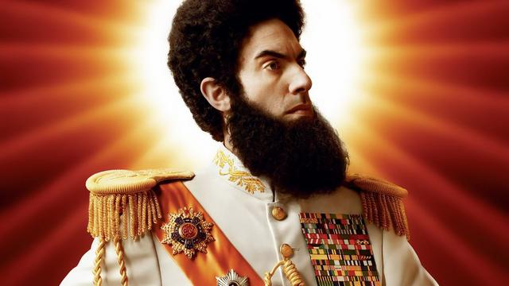

The dictator’s Learning Curve (William J. Dobson)
Ditadores e governantes autoritários de hoje são muito mais sofisticados, espertos e ágeis do que os do passado. Confrontados com pressões crescentes, os mais inteligentes não apelam para a criação de um Estado autoritário, nem fecham suas portas para o mundo exterior; em vez disso, aprendem e se adaptam. Para dezenas de líderes autoritários, os desafios apresentados pelo avanço da democracia levaram à experimentação, criatividade e astúcia.

Dobson identifica inúmeras rotas pelas quais ditadores modernos consolidaram poder enquanto fingiam legitimidade:
- sistemas judiciais quase independentes;
- um parlamento aparentemente eleito pelo povo;
- leis abrangentes aplicadas de forma seletiva e
- um cenários de mídia que permite vozes de oposição desde que os oponentes ao regime percebam seus limites implícitos.
Segundo o autor, em vez dos regimes personalistas e dos Estados párias dos velhos tempos, os governos autoritários modernos são “projetos conscientes e elaborados que devem ser construídos, polidos e reforçados com cuidado”.
What defeats terrorism is really two things. It’s rule of law and then it’s opportunity for people. So if you have governance that allows you to have rule of law, you have an environment in which it is difficult to pursue terrorism. And if you have an opportunity for people in life, which includes education and the chance to have a job, then you take away the biggest cause of terrorism. So really, the way to defeat terrorism is not military strikes, it’s going after the basic conditions.
General Stanley McChrystal